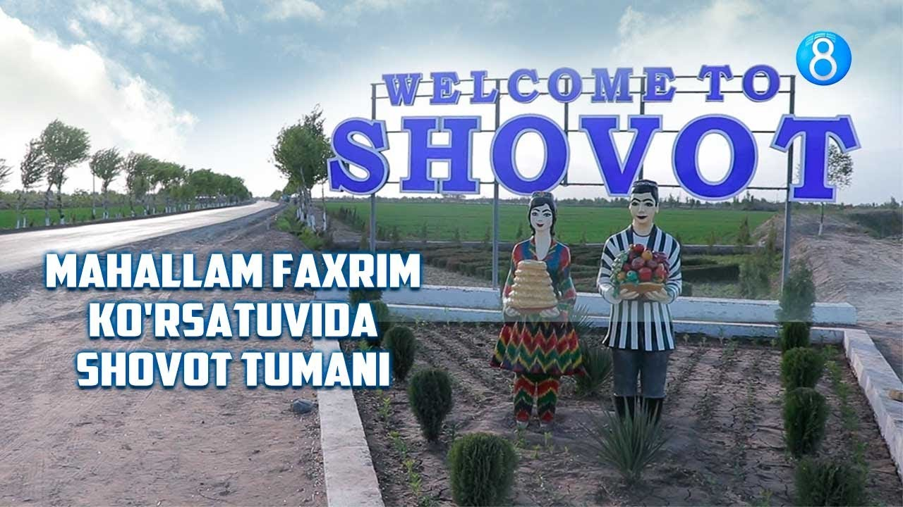
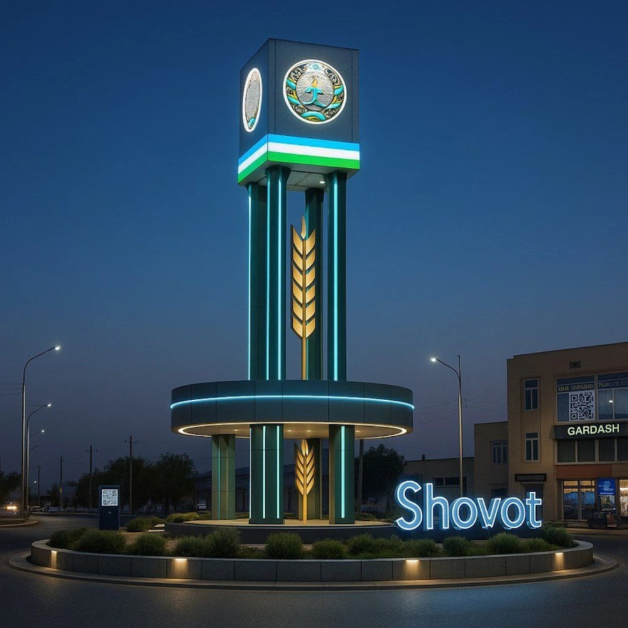

Shovot tumani – Oʻzbekiston Respublikasining Xorazm viloyatidagi tuman. tashkil etilgan. Janubidan Qoʻshkoʻpir tumani, janubi-sharqdan Urganch tumani, sharqdan Yangibozor tumani, shimoli-sharqdan Gurlan tumani, shimoliy, shimoli-gʻarb va gʻarbdan Turkmaniston bilan chegaradosh. Maydoni 0,46 ming km2. Aholisi 183,600 kishi (2025). Tumanda 1 shaharcha (Shovot), 11 qishloq fuqarolari yigʻini (Beshmertan, Boʻyrachi, Ijtimoiyat, Katqalʼa, Xitoy, Chigʻatoyqalʼa, Choʻqli, Shovotqalʼa, Oʻzbekiston, Qangʻli, Qiyot) bor. Markazi – Shovot shaharchasi. Tuman xoʻjaligi, asosan, qishloq xoʻjaligiga ixtisoslashgan. Shovot tumanida faoliyat koʻrsatayotgan 900 dan ziyod korxonadan 82 tasi yirik, 17 tasi oʻrta, 76 tasi kichik korxona, 742 tasi mikrofirmalardir. Sanoat korxonalaridan paxta tozalash, podshipnik zavodlari, un kombinati ishlab turibdi. Charm mahsulotlari fabrikasi, MTP, qurilish tashkilotlari, avtokorxona, „Semurgʻ“, Oʻzbekiston-Germaniya „UZTEX“ qoʻshma korxonalari faoliyat koʻrsatadi.